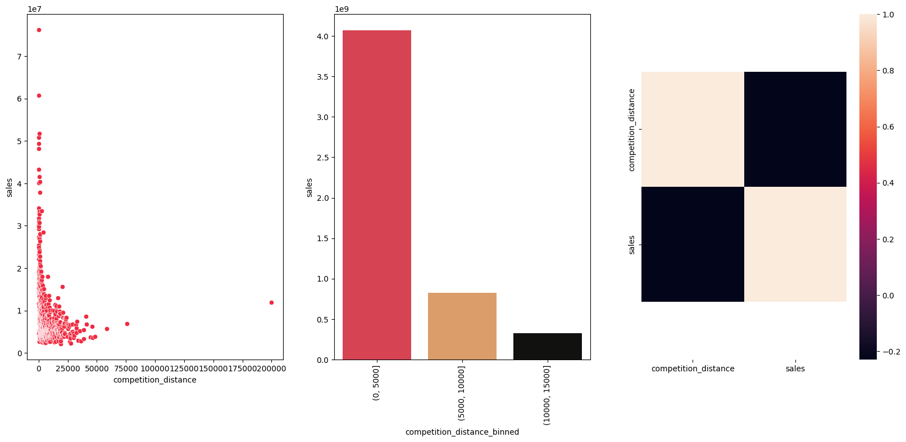
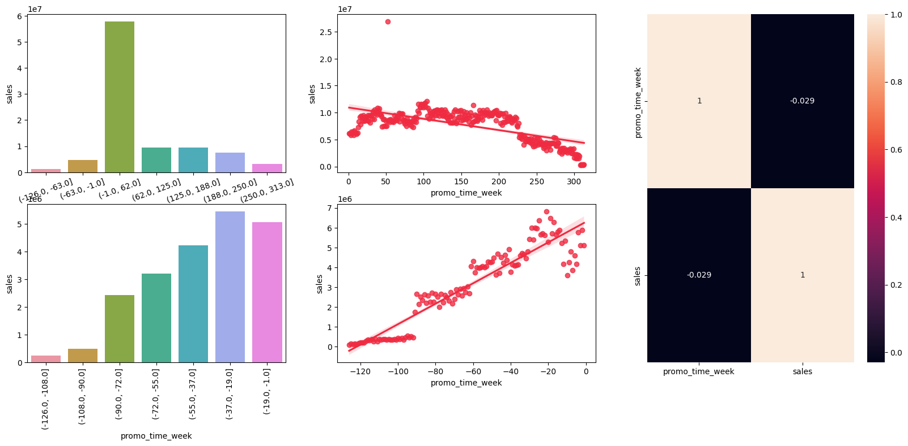
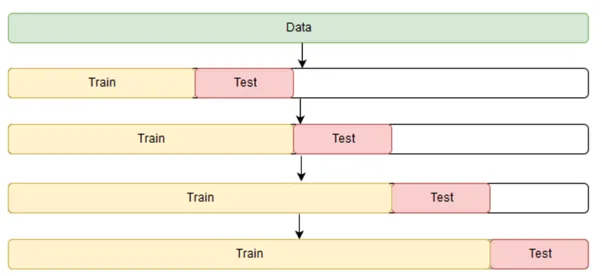
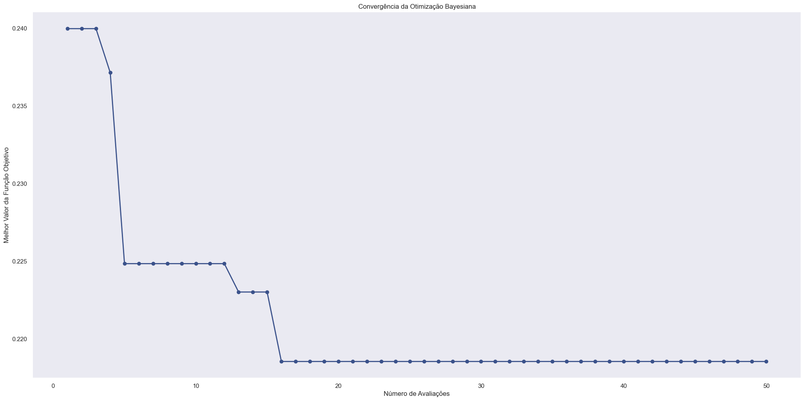
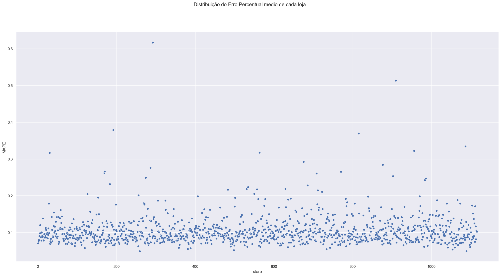
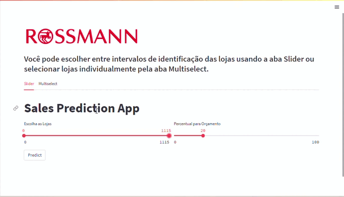

Readme#
Previsão de Vendas - Rede de Farmácias Rossmann#
A Rossmann é uma rede de farmácias que opera em mais de 3.000 lojas em 7 países europeus, empregando cerca de 56 mil colaboradores. A empresa disponibilizou dados de vendas de suas filiais na plataforma Kaggle, contendo mais de 1 milhão de registros com 18 características únicas para cada venda.
1. Problema de Negócio#
O Chief Financial Officer (CFO) da Rossmann deseja reformar as lojas da rede de farmácias, visando melhorar a estrutura e o atendimento ao público. Para isso, ele informou aos gerentes que precisa receber a previsão de receita das próximas 6 semanas de cada loja, a fim de determinar o valor a ser investido em cada uma delas.
Atualmente, as previsões são feitas individualmente por cada gerente de loja, resultando em variações significativas devido a fatores distintos que influenciam os resultados, como promoções, competição por clientes, feriados e sazonalidade. O processo de cálculo é manual, o que torna os resultados ainda mais inconsistentes.
O objetivo deste projeto é auxiliar o CFO na tomada de decisões, fornecendo previsões automáticas para cada loja e permitindo que ele consulte essas previsões através de um Bot no aplicativo Telegram.
2. Premissas de Negócio#
Para construir a solução, as seguintes premissas foram consideradas:
A consulta da previsão de vendas estará disponível 24/7 e será acessível via portal web. O CFO escolherá o intervalo dos IDs das lojas ou ira selecionar as lojas de interesses idividualmente e receberá como resposta um arquivo Excel para Dowload contendo a previsão e o orçamento estipulado por ele.
A previsão considerará apenas as lojas que tiveram vendas superiores a 0 nos dados disponíveis.
Os dias em que as lojas estiveram fechadas serão excluídos da previsão.
Lojas sem informações sobre competidores próximos terão a distância fixada em 200.000 metros.
2.1. Descrição dos Dados#
Atributo |
Descrição |
|---|---|
Store |
Identificador único de cada loja |
Date |
Data em que ocorreu o evento de venda |
DayOfWeek |
Variável numérica que representa o dia da semana |
Sales |
Valor de vendas do dia |
Customers |
Quantidade de clientes na loja no dia |
Open |
Indicador para loja aberta = 1 ou fechada = 0 |
StateHoliday |
Indica se o dia é feriado de estado. a = Feriado público, b = Feriado de páscoa, c = Natal, 0 = Não há feriado |
SchoolHoliday |
Indica se a loja foi ou não fechada durante o feriado escolar |
StoreType |
Indica o modelo de lojas. Pode variar entre a, b, c, d |
Assortment |
Indica o nível de variedade de produtos: a = básico, b = extra, c = estendido |
CompetitionDistance |
Distância (em metros) para o competidor mais próximo |
CompetitionOpenSince [Month/Year] |
Indica o ano e mês em que o competidor mais próximo abriu |
Promo |
Indica se a loja está com alguma promoção ativa no dia |
Promo2 |
Indica se a loja deu continuidade na promoção: 0 = loja não está participando, 1 = loja participando |
Promo2Since [Year/Week] |
Descreve o ano e semana de quando a loja começa a a promoção extendida |
PromoInterval |
Descreve os meses em que a loja iniciou a promo2, ex.: “Feb,May,Aug,Nov” significa que a loja iniciou as promoções estendidas em cada um desses meses |
3. Estratégia da Solução#
Para garantir uma entrega rápida e eficiente da primeira solução, com o objetivo de trazer valor para a empresa e permitir decisões ágeis por parte do CFO, foi adotado o método CRISP-DM.

O método CRISP-DM é composto por 9 etapas cíclicas, em que a cada iteração dessas etapas, o resultado de negócio é aprimorado, buscando entregas cada vez mais rápidas e de maior qualidade, com maior precisão. Isso possibilita que as equipes que utilizarão os resultados desenvolvidos tenham um produto minimamente utilizável já na primeira entrega, e que seja aprimorado ao longo do tempo.
Passos do CRISP-DM:#
Problema de Negócio: Esta etapa tem como objtive receber o problema de negócio que será resolvido. É nesta etapa que é recebido a pergutna ou o pedido feito pelo dono do problema, que no caso deste projeto, é o CFO da rede Rossmann.
Entendimento de Negócio: Esta etapa tem como objetivo entender a dor do dono do problema e qual a sua real necessidade. Nesta etapa podem surgir protótipos da solução para validar com o dono do problema o que ele deseja como solução.
Coleta de Dados: Esta etapa tem como objetivo realizar a coleta dos dados, buscando eles nas tabelas do(s) banco(s) de dados da empresa.
Limpeza dos Dados: Esta etapa tem como objetivo remover toda e qualquer sujeira nos dados. Um dado sujo pode ser entendido como um dado que irá atrapalhar a performance final do algoritmo de Machine Learning. Tomando o cuidado entender bem o fenômeno que está sendo estudado para que não sejam removidos dados importantes para a modelagem do problema.
Exploração dos Dados: Esta etapa tem como objetivo entender os dados e como eles se relacionam entre si. Normalmente, são criadas hipóteses acionáveis de negócio que são posteriormente validadas utilizando técnicas de análise de dados. Além da criação de novas features que serão utilizadas na etapa de Modelagem de Dados.
Modelagem dos Dados: Esta etapa tem como objetivo preparar os dados para que eles sejam utilizados pelos algoritmos de Machine Learning. É nesta etapa que são feitos as transformações e encodign dos dados, a fim de facilitar o aprendizado do algoritmo utilizado.
Aplicação de Algoritmos de Machine Learning: Esta etapa tem como objetivo selecionar e aplicar algoritmos de Machine Learning nos dados preparados nas etapas anteriores. É nesta etapa que são selecionados os algoritmos e feito a comparação de performance enetre eles, para selecionar o algoritmos que melhor performou como algoritmo final.
Avaliação de Performance: Esta etapa tem como objetivo verificar a performance do algoritmo selecionado na etapa anterior com os resultados atuais, ou base line atual. Neste momento é feito a tradução da performance do algoritmo para perfomance de negócio. Ou seja, quanto a solução criada tratrá de retorno financeiro para a empresa. Caso a performance seja aceitável, o algoritmo é publicado e é retornado para a etapa de entendimento de negócio novamente, a fim entender melhor possíveis lacunas e assim melhorar a performance do algoritmo selecionado. Caso a performance não seja aceitável, o algoritmo não é publicado e é retornado para a etapa de entendimento de negócio para fazer uma nova iteração e assim melhorar a performance da solução.
Publicação da Solução: Esta etapa tem como objetivo publicar o algoritmo selecionado, deixando publico e utilizável a solução criada.
3.1. Produto Final#
Foi acordado com o CFO a disponibilização de uma interface web, por meio da qual ele poderá selecionar as lojas desejadas para previsão, assim como definir a porcentagem destinada ao orçamento. Essa solução visa facilitar a verificação das previsões das lojas pelo CFO. Além disso, ele terá a opção de baixar um arquivo CSV com os dados para importação no Excel, onde poderá realizar análises adicionais conforme necessário.
Além disso, no processo de criação do produto final, será criado uma API que será utilizada para retornar as previsões das lojas. Essa API irá utilizar o modelo de Machine Learning desenvolvido para realizar a previsão.
3.2. Ferramentas Utilizadas#
Para criar a solução, foram utilizadas as seguintes ferramentas:
Linguagem de Programação Python versão 3.10.9
Versionador de código Git
Aplicação Jupyter Notebook para prototipar a solução
Serviço de Hospedagem em Nuvem
Técnicas de manipulação de dados utilizando a linguagem de programação Python
Técnicas de redução de dimensionalidade e seleção de atributos
Algoritmos de Machine Learning da biblioteca scikit-learn da linguagem de programação Python
streamlit cloud para aplicação web
4. Os 2 maiores Insights#
Foi criado um Mindmap para ajudar na construção de Hipóteses, a fim de facilitar e delimitar o escopo da etapa de análise exploratória.

Através do Mindmap, foram geradas 19 hipóteses de negócio. Dessas, 12 foram selecionadas para validação, confirmando premissas da equipe de negócios e do responsável pelo problema. Além disso, foram gerados insights relevantes para ambos os grupos.
Dos 12 hipóteses verificadas, destacaram-se os principais insights.
Insight 1: Lojas com competidores mais próximos na média deveriam vender menos.#
FALSA Lojas com COMPETIDORES MAIS PROXIMOS em média vendem MAIS.

Insight 2: Lojas com promoções ativas por mais tempo deveriam vender mais.#
FALSA Lojas com promoções ativas por mais tempo vendem menos, depois de um certo periodo de promoção.

5. Modelos de Machine Learning#
No primeiro ciclo do projeto, foram selecionados cinco algoritmos para teste, visando identificar o algoritmo com melhor desempenho e custo de implementação. Nessa etapa inicial, optou-se pela simplicidade, considerando que era o primeiro ciclo do projeto e o objetivo principal era entregar uma solução mínima utilizável para a equipe de negócios e pelo CFO.
Os algotitmos selecionados foram:
Avarege Model
Linear Regression
Linear Regression - Lasso
Random Forest Regressor
XGBRegressor
Após a seleção dos algoritmos, procedemos com o treinamento e teste de cada um deles para avaliar sua performance. Além disso, utilizamos o método de seleção de features RFE para identificar as variáveis mais relevantes e impactantes na base de dados.
6. Seleção do Modelo de Machine Learning#
6.1. Escolha da Métrica#
Na escolha entre os algoritmos, utilizamos a métrica MAPE (Mean Absolute Percentage Error), que é uma medida de erro que expressa a porcentagem média do erro em relação ao valor real. Optei por essa métrica porque ela é mais compreensível para a equipe de negócios e o CEO, uma vez que fornece uma representação percentual do erro em relação ao valor médio. Dessa forma, é mais fácil interpretar e comunicar o desempenho dos algoritmos selecionados.
6.2. Métricas dos Algoritmos - Time Series Cross-Validation#

Com esse método de validação, foram obtidas as seguintes performances:
Nome do Modelo |
MAE CV |
MAPE CV |
RMSE CV |
|---|---|---|---|
XGBoost Regressor |
1096.91 +/- 157.56 |
0.16 +/- 0.02 |
1603.58 +/- 260.99 |
Random Forest Regressor |
1042.48 +/- 232.24 |
0.15 +/- 0.03 |
1637.8 +/- 412.93 |
GradienteBoost Regressor |
1785.87 +/- 82.54 |
0.28 +/- 0.01 |
2570.45 +/- 119.73 |
Linear Regression - Lasso |
1990.09 +/- 78.8 |
0.32 +/- 0.01 |
2830.26 +/- 141.18 |
Linear Regression |
1991.32 +/- 79.87 |
0.32 +/- 0.01 |
2834.85 +/- 148.89 |
6.3. Escolha do Modelo#
Embora o algoritmo Random Fores Regressor tenha sido o algoritmo que melhor performou, foi optado pelo algoritmo XGBosst Regressor nesta etapa.
Primeiro, porque o erro entre esses dois algoritmos é pequeno.
segundo porque o tempo de treinamento do XGBoost Regressor é mais rápido se comparado ao algoritmo Random Fores Regressor.
Terceiro porque o modelo final treinado pelo algoritmo XGBoost Regressor ocupa menos espaço que o algoritmo Random Fores Regressor, deixando assim o uso de servidores em nuvem mais baratos.
E por último nossa prototipagem não seria viável devido ao espaço reduzido na plataforma render para alocar o modelo.
6.4. Ajuste de Hiperparâmetros#
Foi empregada a técnica de Bayesian SearchCV para otimizar a busca dos melhores hiperparâmetros. A fim de identificar o parâmetro ideal, optei por utilizar uma amostra referente a um período de 1 ano. Essa escolha permite aumentar o número de iterações em um espaço de tempo reduzido, maximizando a probabilidade de localizar um mínimo global.

6.5 Métricas do Modelo Final#
Nome do Modelo |
MAE CV |
MAPE CV |
RMSE CV |
|---|---|---|---|
XGB Regressor Tuned |
1022.37 +/- 153.25 |
0.16 +/- 0.02 |
1477.74 +/- 253.24 |
7 Performance#
7.1 Performance do modelo#
Ao analisar os dois primeiros gráficos abaixo, é evidente que o modelo é capaz de capturar o comportamento cíclico das vendas, embora apresente alguns períodos com taxas de erro mais elevadas.
Já nos dois últimos gráficos, a distribuição das previsões parece seguir uma distribuição normal. No entanto, é notável que tanto a kurtosis (43.03) quanto a Skewness (2.31) apresentam valores elevados. Além disso, ao examinarmos o quarto gráfico, onde estão plotados os erros, podemos observar que muitas previsões estão fora dos limites do “bigode do boxplot”, indicado por uma linha tracejada, e também podemos identificar valores extremos destacados em vermelho.
Uma análise mais aprofundada revela que esses erros outliers ocorrem em lojas específicas, o que pode ser uma área de investigação para um ciclo de análise subsequente. Uma exploração completa dessas observações está disponível na apresentação em formato de Jupyter Notebook, a qual você pode acessar para mais detalhes clicando aqui.

7.2 Performance por Loja#
Como mencionado anteriormente, há lojas com erros muito acima da média, podendo ultrapassar os 60%, conforme evidenciado no primeiro gráfico desta seção. No segundo conjunto de gráficos, observamos que aproximadamente 700 lojas apresentam erros de até 10%, o que é um desempenho excelente para o nosso problema de negócio. Além disso, temos um grupo com pouco mais de 300 lojas, nas quais os erros variam entre 10% e 15%, enquanto as demais lojas apresentam erros superiores a 20%.
Gráfico 1: Distribuição do Erro Percentual médio de cada loja 
Gráfico 2: Distribuição do erro em relação a lojas

7.3 Total Performance#
Scenario |
Values |
|---|---|
total_prediction |
R$283,511,104.00 |
worst_scenario_total |
R$249,610,248.61 |
best_scenario_total |
R$317,411,923.22 |
8 Aplicação#

9. Conclusões#
Neste estágio do projeto, podemos tirar algumas conclusões importantes. É evidente que o modelo não apresenta um desempenho uniforme para todas as lojas. Nesse sentido, sugiro ao CFO que priorize um levantamento das 700 lojas que demonstraram bom desempenho até o momento.
Para o próximo passo, nossa recomendação é que concentremos nossa análise nas demais lojas. Isso nos permitirá alcançar resultados mais adequados para prever as vendas das próximas 6 semanas. A partir dessas informações sólidas, o CFO poderá tomar decisões embasadas para elaborar os orçamentos.
Essa abordagem direcionada nos permitirá otimizar nossos recursos e concentrar nossos esforços onde têm maior probabilidade de impacto positivo.
10. Próximos Passos#
Realizar uma investigação detalhada para identificar as causas das previsões inadequadas em algumas lojas.
Explorar a inclusão de diferentes algoritmos durante a próxima fase de treinamento, com o objetivo de aprimorar a precisão das previsões.
Identificar e criar novas variáveis (features) que possam contribuir para melhorar o desempenho do modelo atual e futuros modelos de previsão.
Criar novas Features para tentar melhorar a perfomance do modelo atual e de modelos futuros.
Fazer novos levantamentos de hipóteses afim de buscar novos insights e conhecimento de negócio.